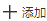
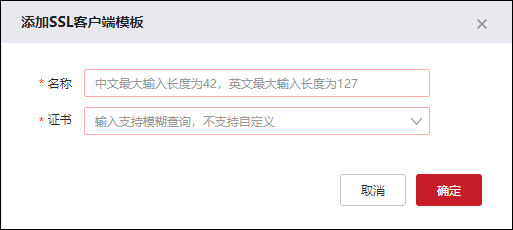
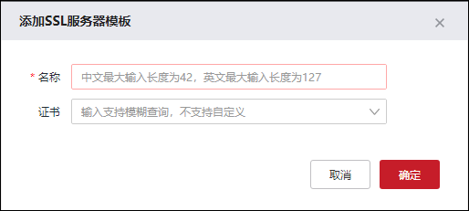
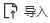
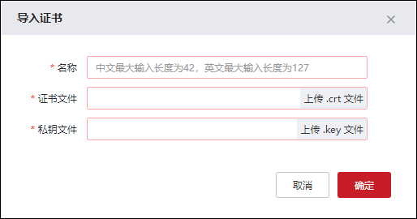
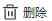

代理模板功能添加SSL客户端或SSL服务器的模板，用于NGFW对客户端和服务器端的SSL证书进行认证，解密或重新加密流量，配置代理模板的具体操作如下：
lSSL客户端模板
| 步骤1 | 选择 ，激活“SSL客户端模板”页签，点击“  ”弹出“添加SSL客户端模板”对话框，如下图所示。 |

各项参数的具体说明如下表所示。
参数 |
说明 |
|---|---|
名称 |
设置SSL客户端模板的名称。 |
证书 |
设置客户端SSL加密的证书，在下拉框中可选择证书文件，关于证书文件的配置具体请参见 SSL证书。 |
| 步骤2 | 配置完成后点击【确定】按钮完成模板添加。 |
| 步骤3 | 点击『导出根证书』可导出当前NGFW的根证书。 |
|
²使用预置动态证书模板时，如果是客户端PC使用浏览器进行访问，将证书导入到浏览器的信任列表即可，但有些软件内置了浏览器，比如微信，打开公众号的时候使用的是内置浏览器，这个时候需要在客户端PC安装防火墙根证书才能进行访问。 |

lSSL服务器模板
| 步骤1 | 选择 ，激活“SSL服务器模板”页签，点击“”弹出“添加SSL服务器模板”对话框，如下图所示。 |

各项参数的具体说明如下表所示。
参数 |
说明 |
|---|---|
名称 |
设置SSL服务器模板的名称。 |
证书 |
设置发送给服务器端SSL加密的证书，在下拉框中可选择证书文件，关于证书文件的配置具体请参见 SSL证书。 |
| 步骤2 | 配置完成后点击【确定】按钮完成模板添加。 |
| 步骤1 | 选择 ，在“SSL证书”栏中，点击“  ”弹出“导入证书”对话框，如下图所示。 |

| 步骤2 | 点击【上传.crt/.key文件】按钮可选择证书文件及私钥文件导入至NGFW，输入证书名称，再点击【确定】按钮完成证书文件的添加。 |
| 步骤3 | 选中已添加的证书，点击“  ”可删除该证书。 |
|
²只有“预置动态证书模板”支持导出根证书。 |